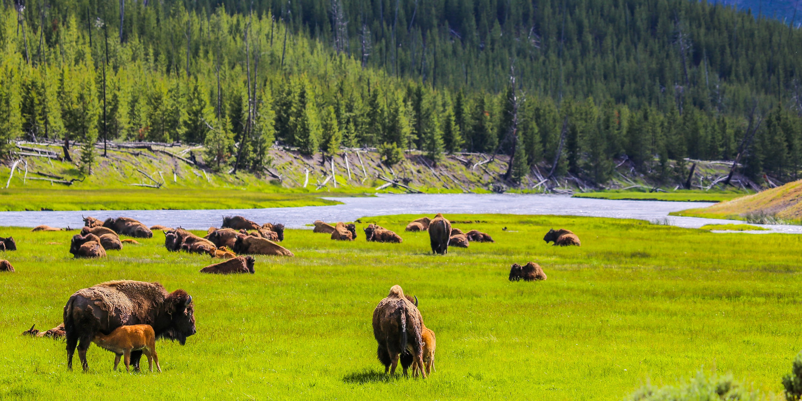
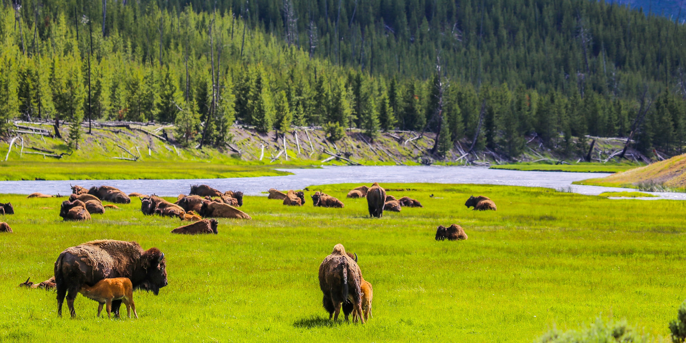

Travel
Yellowstone National Park
 

Geographical Location: North America
Yellowstone National Park is located in the northwest region of the United States, covering an area of 3,472 square miles. The park is primarily situated in the northwest corner of Wyoming, accounting for 96% of its total area. However, it also extends into Montana and Idaho, which make up 3% and 1% of the park respectively. The park has five entrances: north, northeast, east, south, and west, and includes eight developed visitor areas.
The park's vast expanse encompasses a variety of natural features, including lakes, canyons, rivers, and mountain ranges. Yellowstone Lake, one of the largest high-elevation lakes in North America, is centered over the Yellowstone Caldera, the largest super volcano on the continent. The park is also home to the world's largest concentration of geysers and hydrothermal features. This diverse landscape makes Yellowstone National Park a significant ecological site, and in 1978, it was named a UNESCO World Heritage Site.
Photo Gallery


Boston
.gif)

Geographical Location: North America
Boston, Massachusetts, is a city where American history comes to life. With its storied past, including the Boston Tea Party and the Battle of Bunker Hill, the city preserves its heritage through historic landmarks and the Freedom Trail. Beyond history, Boston is a vibrant cultural and academic center, home to renowned universities like Harvard and MIT, as well as world-class museums, theaters, and a thriving sports scene.
Boston's neighborhoods offer a diverse range of experiences, from the cobblestone streets of Beacon Hill to the trendy shops and restaurants of the South End. The city's green spaces, such as the Boston Common and the Emerald Necklace parks, provide a peaceful escape from the urban hustle, while the bustling waterfront and delicious seafood cuisine showcase its maritime roots. Boston's unique blend of history, culture, and local charm makes it a captivating destination for visitors and a beloved home for its residents.
Photo Gallery


Bangkok


Geographical Location: Southeast Asia
Bangkok, Thailand’s capital, is a large city known for ornate shrines and vibrant street life. It is officially known in Thai as Krung Thep Maha Nakhon and colloquially as Krung Thep.
Bangkok welcomes more visitors than any other city in the world and it doesn’t take long to realize why. Bangkok is a city of contrasts with action at every turn. Marvel at the gleaming temples, catch a tuk tuk through bustling Chinatown or take a longtail boat through floating markets. Food is another Bangkok highlight, from local dishes served at humble street stalls to haute cuisine at romantic rooftop restaurants.
Photo Gallery